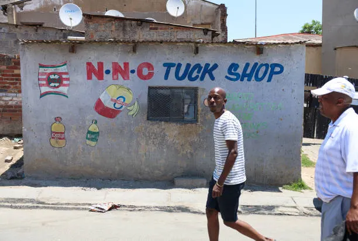

It was established in 2014 by Mohammed Sahir where it was built in Port Elizabeth, Motherwell, near the SportsCenter, and is well beloved by the community.
Provide convenient, affordable everyday goods with friendly, reliable service to our local community. The primary goal is to serve as a vital resource that ensures financial stability and economic empowerment for the entrepreneur and their family.
To be the most trusted and convenient spaza in our area, improving daily life for every neighbour. Often aspire to grow the business into a sustainable and financially stable micro-enterprise within the township economy.
